Inkscape has painting
features that simulate strokes done with a charcoal pencil, paint brush,
marker, and more. Line tapering options of the Pen and Pencil tools
allow for controlled thickening and thinning of middles and ends of line
segments, adding flourish and a touch of elegance to the overall design
of the artwork.
In this tutorial, you’ll learn how to do the following:
How to work with the Pencil tool’s Triangle in and Triangle out
features to create a tapering path.
How to create a custom charcoal pencil filter.
How to add a charcoal pencil effect to a path.
How to scatter objects along a path.
How to simulate drawing with an edged marker pen.
How to fill a blank area enclosed fully or partially by a curved line
segment.
Getting Started
In this tutorial, you will apply different styles of paint brush and
drawing pencil to a template file that contains the paths that you will
trace over and apply brush effects to.
This tutorial is the first of three parts that explore the use of painting
and drawing with the aim of stylizing what you draw. Take your time exploring
the different techniques and tools, become familiar with their capabilites and
limitations, and include them in your toolbox of means to enhancing your
skills as a graphic artist.
Download file Tutorial14A_end.svg
and store it in a convenient location on your computer. Choose File >
Open, and open the Tutorial14A_end.svg file.
Partially finished poster.
If you like, choose View > Zoom > Zoom Out to make the
finished artwork smaller, adjust the window size, and leave it on your
screen as you work. If you don’t want to leave the image open,
choose File > Close.
To begin working, download file Tutorial14A_start.svg
and store it in a convenient location on your computer. Choose File >
Open to open it.
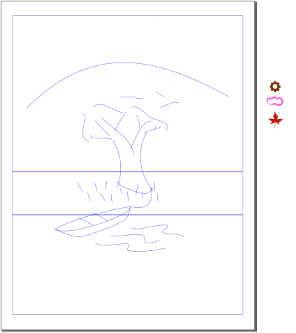
Start file for Tutorial 14, Part A.
Choose File > Save As, name the file Brushes.svg, and
store it where you deem best.
You will be using layers to create your artwork.
Click on the View Layers icon () in the
Tool Controls Bar and rename the current (and only) layer
Guides.
Add a new layer on top of the Guides layer and label it
Tree and Leaves. It is highlighted, indicating that it is the active
layer. This is the layer you will start drawing on.
Minimize the Layers dialog box by clicking the Iconify
this dock () icon. You’ll be using the Layers dialog
box later.
Using Art Brush Tools
Art brushes stretch artwork evenly along a path. They include strokes
resembling various graphic media, such as the Chalk and Sponge, and Marker
brushes. Brush tools don&rsqou;t exist as a distinct central palette of tools
in Inkscape. Instead, they are distributed throughout Inkscape&rsqou;s
organization of features. In this section, you’ll create and apply a
custom charcoal brush to draw the trunk and limbs of a tree in a way that
imitates using a charcoal pencil.
The start file has been created with guides that you can use to create
and align your artwork for this tutorial. They are locked and cannot be
selected, moved, modified, or printed (unless they are unlocked). The guides
in the illustration above are very light (that is how they are in the
original file). They will be darkened a bit in the rest of this tutorial so
you can see them more easily.
Applying a Tapered Stroke Effect to a Path
You’ll start by drawing the trunk of the tree in a two-step process.
The first step involves tracing over the two trunk guides using the Pencil
tool (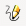).
Select the Pencil tool (). In the Pencil Tool Control Bar,
set Smoothing to 20 and Shape to Triangle
in.
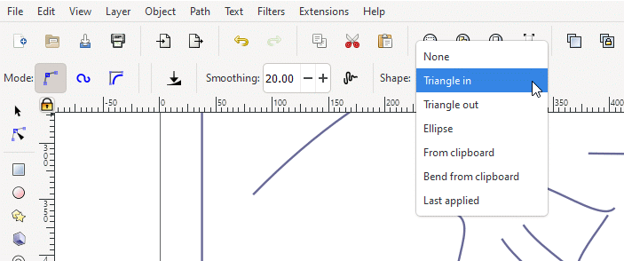
Setting Smoothing to 20 and Shape to
Triangle in.
The Smoothing function acts to reduce the small-scale bumps and
irregularities that commonly appear in a line or curve that you draw
using the Pencil tool. The Smoothing function allows you to make
a line or curve smooth by adjusting the smoothing factor from 1 to 100.
A smoothing factor of 1 keeps all the small bumps and jitters that the
hand produces. As you increase the smoothing factor, small-scale
deviations are reduced in size until you achieve an essentially straight
line, no matter how jiggly the line is.
A few examples below demonstrate how the smoothing function works:
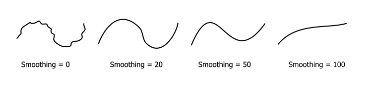
Examples of smoothing.
Drag the Pencil tool cursor up for the left side of the trunk and
down for the right side. Your line might look different in color and width
than the line in the figure below. You’ll take care of that
shortly.
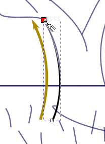
Drawing the left trunk line.
Note how the line tapers from a somewhat wide start to a thin end.
Draw the right line for the tree trunk.
Choose Triangle out for Shape and draw up from the rope
knot at the bottom right of the trunk to the upstairs intersection with a
branch.
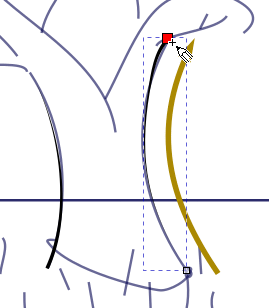
Drawing the right trunk line.
You will widen the starting point of the left line.
Magnify the starting point of the line and click the Node tool () in the
toolbox. Three nodes appear on the line, two of which are at the starting
point. One of the latter two nodes terminates the main trace or spine of the
line. The other is a width handle that allows you to change how wide the
line is at the starting point.
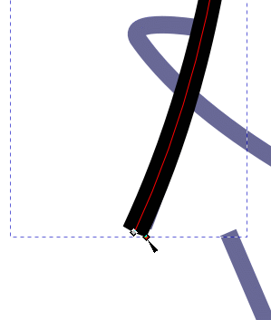
Starting point of the left line magnified. The Node tool
icon points to the width handle.
Click-drag the width handle to the right to widen the line’s
starting point.
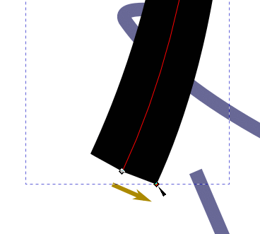
Widening the start of the left line.
Repeat the last two steps for the right line. The width handle is
located at the wide top of the line.
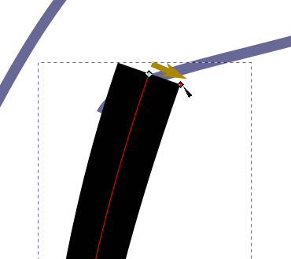
Widening the top of the right line.
You now have the basic geometry of tree trunks that you will add an
appearance filter to in order to create a stylized charcoal pencil
effect.
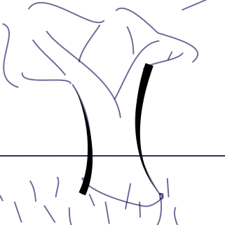
Result.
Creating a Custom Filter with the Filter Editor
Inkscape does not have a filter that mimics drawing with a charcoal
pencil. So, you will create a charcoal filter using Inkscape’s
Filter Editor.
Select the left tree trunk line.
Choose Filters > Filter Editor…. The Filter Editor dialog
panel appears. Resize the inner panels to make work easier.
You will create a new filter. Click on the New button.
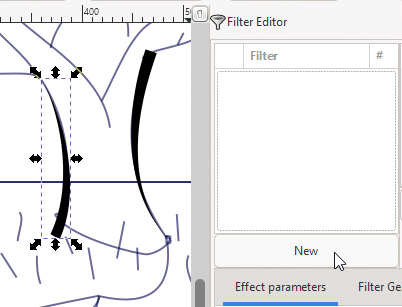
Position the cursor on the New button.
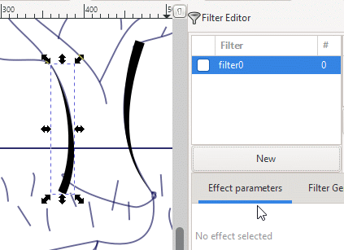
Adding a new filter.
The new filter is given a default name, here filter0.
Click on the filter name to select it and type in Charcoal.
Press <Enter> to set the name.
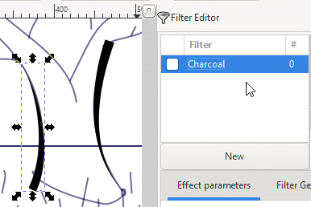
Renaming the new filter.
Activate the new filter by checking the checkbox next to the
filter’s name. The left tree trunk line disappears. If you uncheck
the checkbox, the line reappears. Keep the checkbox checked so you can see
your progress as you go through the filter creation process.
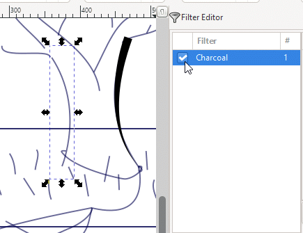
Activating the new filter.
Click on the down arrow in the type box to the right of the Add
Effect: button. A list of filter primitives comes up.
Select Turbulence at the bottom of the list. Turbulence is
inserted into the selection box.
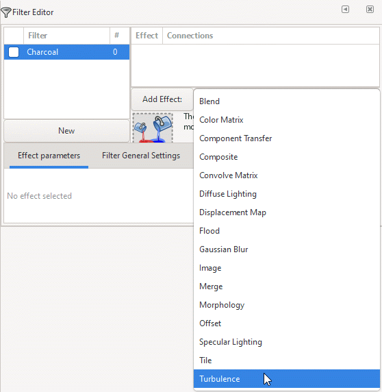
Adding a new effect to the new filter.
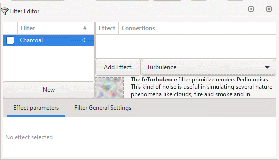
Selecting the Turbulence primitive.
Click on the Add Effect: button. The bounding box is now filled
with a random pattern.
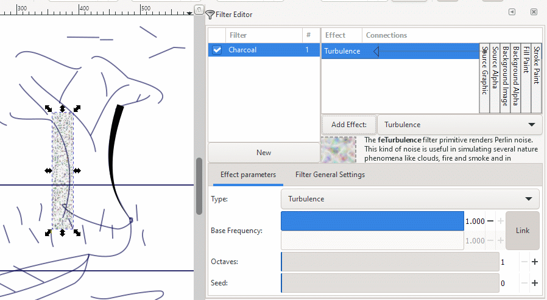
Adding the Turbulence primitive to the Effect
panel.
Although the explanatory text is partially cut off, it reads, in its
entirety:
The feTurbulence filter
primitive renders Perlin noise. This kind of noise is useful in simulating
several nature phenomena like clouds, fire and smoke and in generating
complex textures like marble or granite.
Below are examples of Perlin noise:
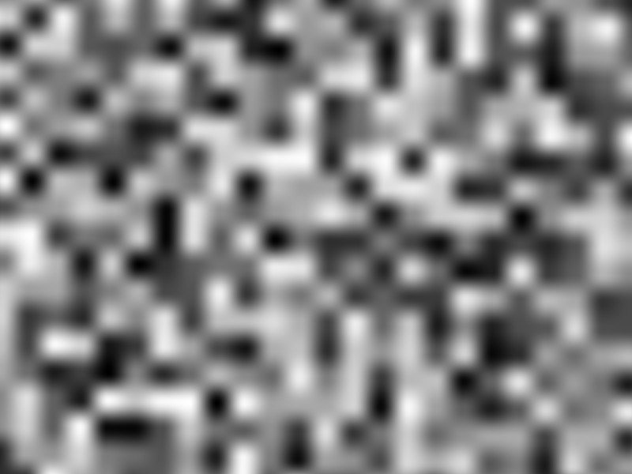
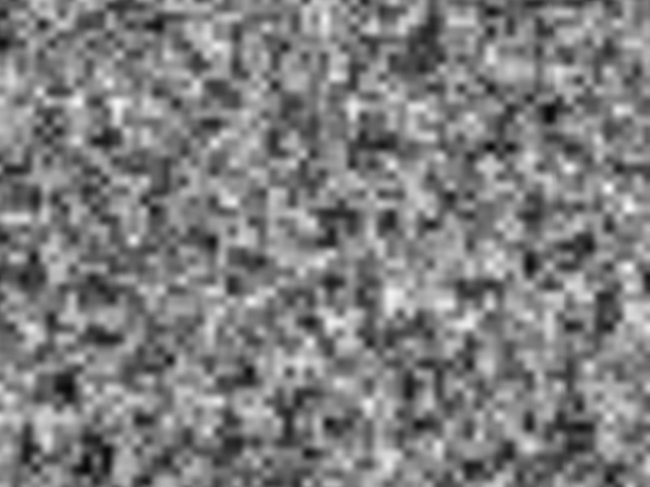
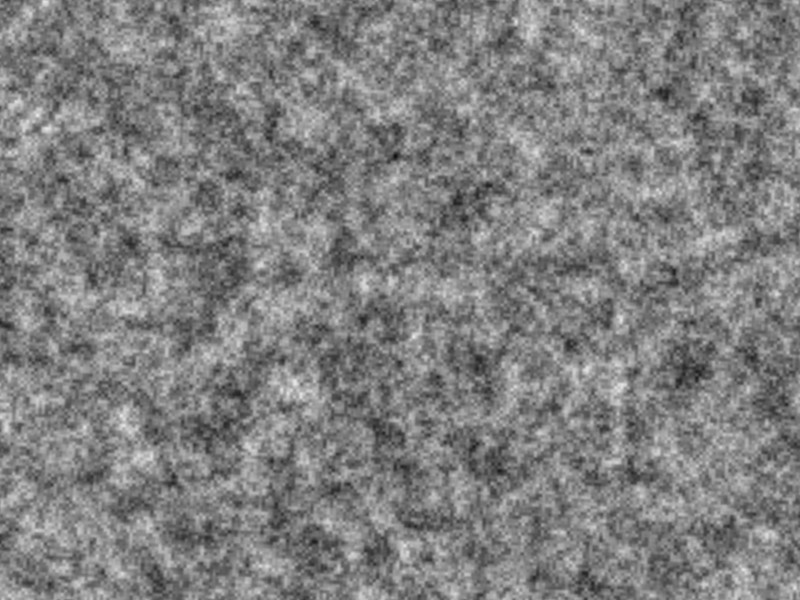
This is the sort of filter component that we need in the Charcoal
filter — the random and rough edge texture that a charcoal pencil
commonly produces when drawing. (The fe prefix stands for
filter effect)
Click on the down arrow in the type box to the right of the Add
Effect: button again and scroll down to Displacement Map.
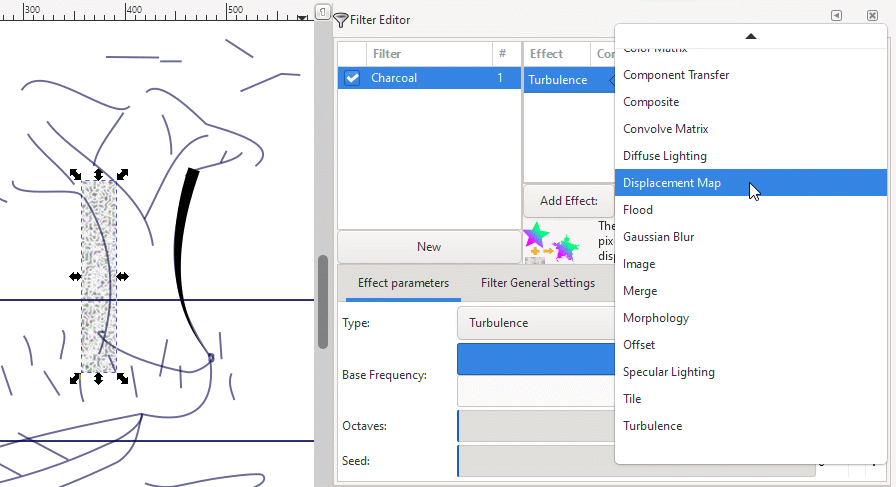
Scrolling down to Displacement Map.
Click on Displacement Map.
Displacement Map is inserted into the Add Effect: text
box.
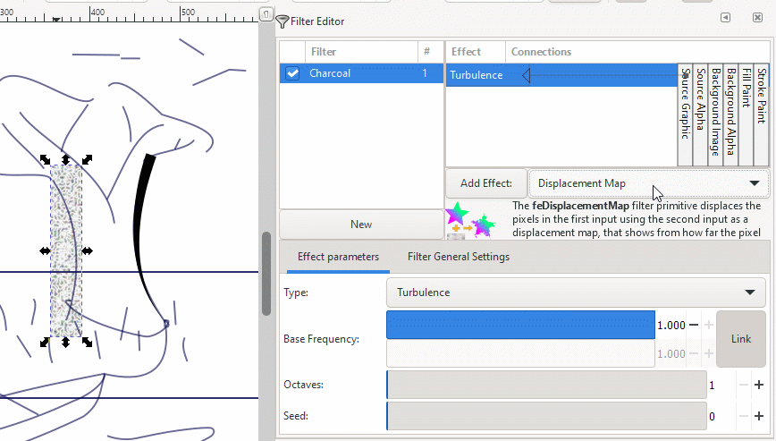
Selecting the Displacement Map filter
primitive.
Click on the Add Effect: button. The Displacement Map
filter primitive is added to the list of filter components that build
toward the Charcoal filter. Note that the Displacement Map
has two arrowheads, instead of one.
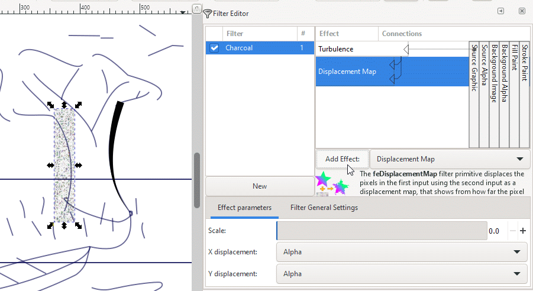
Displacement Map filter primitive added to list of
filter components.
Click on the top arrowhead in the Displacement Map bar. The
arrowhead turns red, indicating that it is selected.
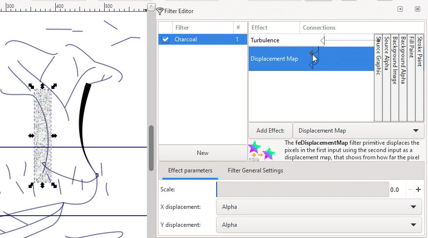
Clicking on the top arrow in the Displacement Map
bar.
Drag the top arrowhead to the leftmost vertical bar labeled
Source graphic and release the mouse button.
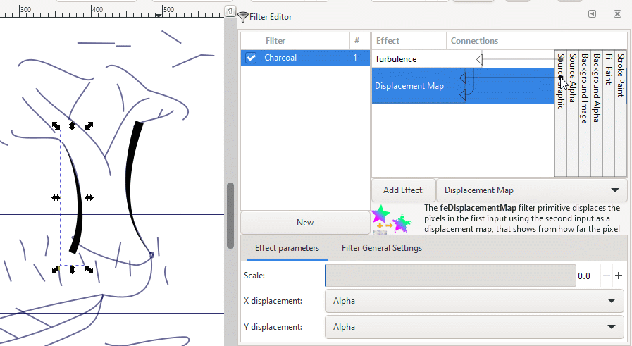
Dragging the top arrowhead to the Source graphic
bar.
In the Effect parameters panel at the bottom of the dialog
box, set Scale = 2.0. A Scale setting of 2.0 produces
a good charcoal-like effect on an edge.
Our X displacement and Y displacement settings were
originally set to Alpha. We kept them that way.
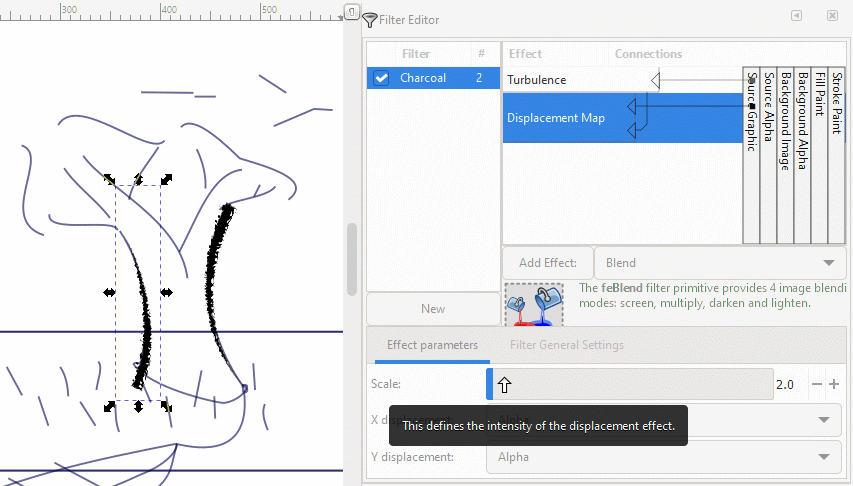
Setting the Scale Effect parameter to
2.0.
Select the right side line of the tree trunk with the Select tool
().
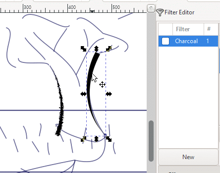
Selecting the right side line of the tree
trunk.
Click on the Charcoal filter checkbox to apply the filter.
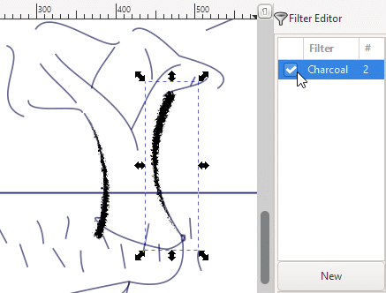
Applying the Charcoal filter to the right side of
the tree trunk.
You might need to make fine adjustments to the placement, degree of
taper (thickness), and orientation of a line. You can click on a line that
has a filter already applied with the Node tool () and still
make your adjustments. The filter does not affect how the Node tool
works.
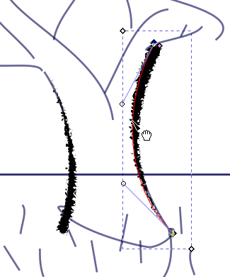
Making fine adjustments with the Node tool.
Select the Pencil tool (). Choose either the Triangle in or
Triangle out option and draw in the tree branches.
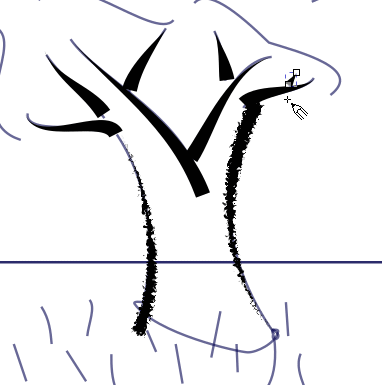
Drawing the tree branches.
Marquee-select the branches with the Select tool ()
to group-select them.
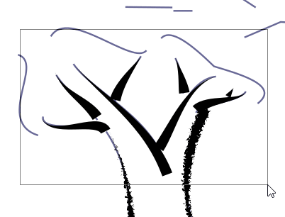
Marquee-selecting branches.
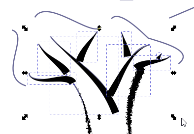
Branches are group-selected.
Check the Charcoal filter checkbox to apply the filter. All
selected branches now look like charcoal pencil strokes.
Applying the Charcoal filter.
Some of the branches might not be aligned closely over their
respective guides. Using the Node tool (), make fine adjustments to the
curvature, beginning width, and length of line segments until you achieve
what you’re looking for. Note that you can do fine adjustments with
a filter already applied — it will have no effect on the Node
tool.
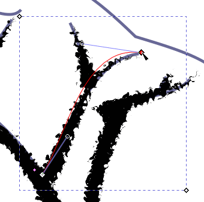
Fine-adjusting branch placement, width, and
length.
Choose Edit > Deselect to deselect the branches. The
Charcoal filter checkbox unchecks, signifying that nothing is
currently selected for stylizing.
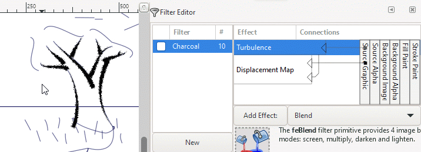
Deselecting the artwork.
Click on the Exit button () in the upper right corner
of the Filter Editor to dismiss it.
Below is the tree with its trunk and branches stylized as charcoal
pencil strokes.
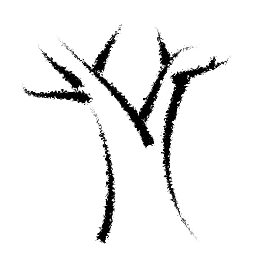
Finished tree trunk and branches.
Using the Spray Tool As a Brush
When you spray art objects along a guide or path, you are using the Spray
tool as if it were a paint brush. Objects can be sprayed directly onto a path
or splashed on so that the result is a scattering of objects, yet still
centered along the path, like leaves swept into rows or sand grains aligned
in ripples.
In this section, you will paint leaves along the tree branches in a very
loose manner using the Spray tool.
Click on the right arrow at the bottom of the toolbox to expand
the Hidden Tools menu. Click on Spray.
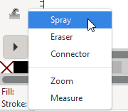
Selecting the Spray tool
In the Spray Tool Controls Bar, set Width = 20,
Amount = 5, Rotation = 100, Scale = 0, Scatter =
100, and Focus = 1. Also, activate Apply over no transparent
areas () and Apply over
transparent areas ().
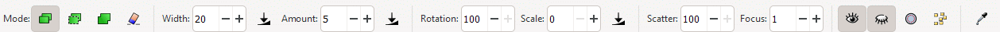
Spray Tool Controls Bar
With the Spray tool active, click and trace over the guides
located at the top of the tree and spray paint on leaves until the tree
is “well-leafed” to your taste.
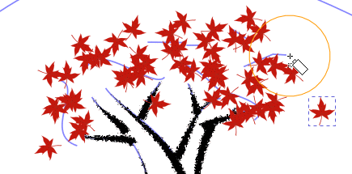
Spraying leaves onto the tree branches.
Your result will look different from the example below. The important
thing is that the tree should look well-endowed with leaves.
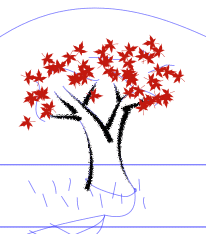
Tree with leaves.
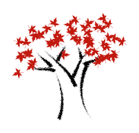
Tree with leaves, no background guides.
Collecting Tapered Pencil Strokes to Simulate a Single Paintbrush
Stroke
One way to imitate brush strokes involves drawing individual lines made
by the camel hairs of the brush tip and collecting them together into one
tip of any width. You can also use this technique to create tufts of grass,
which is the task of this section.
You will start this section by adding a new layer ontop of the
Tree and Leaves layer.
Expand the iconified Layers dialog
box, add a new layer, and label it Grass. Also, lock the
Tree and Leaves layer so you won’t accidentally modify your
earlier work. The guidelines in the Guides layer are already locked,
so it is not necessary to lock that layer.
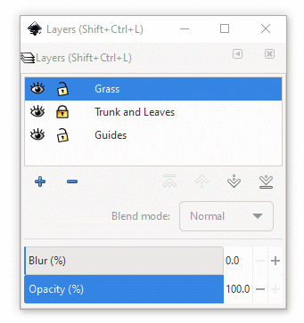
Current Layers dialog box.
Select the Pencil tool (), choose Shape = Triangle out in
the Pencil Tool Controls Bar, and draw 5 or 6 line segments. Your
line segments might have different widths than those shown below. Give a
few of them a little bend or angle.
Select the Node tool () and narrow the width of each line so that
they have the appearance of stylized brush hairs.
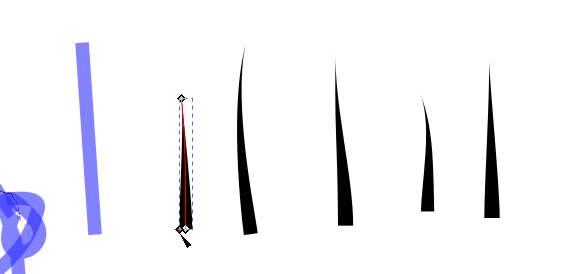
Reducing grass leaf widths.
Bring down a guideline for aligning the bottoms of the line
segments.
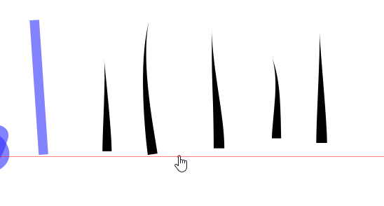
Lowering a guideline to align grass blade
bottoms.
Using the Select tool (), move the line segments together so
that they form a clump. Have them overlap each other so they appear more
organic in appearance.
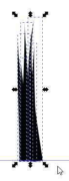
Moving individual grass blades into a coherent tuft of
grass.
You will now make the clump of grass blades one path object for
easy path transformation.
Marquee-select the line segments and choose Path > Object to
Path. Then choose Path > Union to make the clump one path.
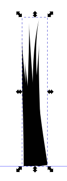
Group-converting the grass blades into paths and making a
union of them into one path.
Give the tuft of grass a green color fill by selecting the green
swatch in the Color palette at the bottom of the working window.
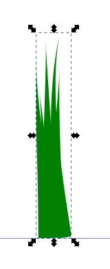
Giving the grass tuft a green color fill.
The green color is too dark for the tuft of grass. This tuft is to
be duplicated and transformed against a background of grass. Give the tuft
a bright green color so it will stand out when the rest of the background
is drawn.
Choose Object > Stroke and Fill…, click the Fill tab,
and enter 66ff00ff into the RGBA text box. Press <Enter>
to set the color value.
Changing the green color fill to bright green.
Make duplicates of the tuft of grass using <Ctrl>-D and move
each duplicate to a grass tuft guide.
Making and positioning duplicates of the original tuft of
grass.
Transform each tuft of grass by rotating it and/or using the
Envelope Deformation path effect (choose Path >
Path Effects… > Envelope Deformation).
The Envelope Deformation path effect works only on paths, so it
was necessary to convert the original tuft of grass from a collection of
objects to a collection of paths, and then make one path out of them by
performing the Union operation.
When you select the Envelope Deformation path effect, a bounding
box encloses the object you want to transform. You can adjust each side of
the box, which is a bend path by selecting the appropriate icon in
the Path Effects dialog box, and then changing the bend of the side
and/or moving the nodes that define the ends of the line segment. Note
that the cursor turns into the Node tool cursor when you select one of the
four bend path icons. When you are done performing the
transformation, select the Select tool ()
to dismiss the Envelope Deformation function.
Applying the Envelope Deformation Path Effect to bend a
tuft of grass.
This method of creating tufts of grass and paintbrush tips is just
one of many that you can explore and invent for yourself as you develop
your own style of painting.
Tree with leaves surrounded by tufts of grass.Tree with leaves surrounded by tufts of grass,
no guidelines.
Click on the Lock icon () to the Grass layer to lock
it down ().
Drawing with the Pencil Tool’s Ellipse Shape and the Bucket Fill
Tool
You will learn how to work with the Pen tool’s ellipse shape option
to draw the outline of the boat. Then, you will learn how to use the Bucket
Fill tool in color fill in the space within an unclosed curve.
First, create a new layer ontop of the Grass layer you just
created earlier. Label it Boat and Rope.
Select the Pencil tool (). In the Pencil Tool Control Bar,
set Smoothing to 20 and Shape to Ellipse.
Using the guides, click-drag the Pencil tool along the nearer edge of
the top of the boat, and keeping the left mouse key depressed, continue
drawing along the bottom of the boat back to the starting point. Note that
there is a very thin line showing where you had drawn.
While you draw, you will note irregularities in the curvature of the
line trace because of your hand jiggling a little bit or the cat running
interference against your arm and hand. The Smoothing function will
eliminate many of the irregularities because you set its level to 20.
You’ll smooth the remaining irregularities out shortly.
If you’re not satisfied with the result, you can always undo the
last with <Ctrl>-Z or by choosing Edit > Undo and start over.
Tracing along the edge of the boat.
You will see only the bounding box of the drawing area at first.
Click on the Node tool (). The curve and its nodes appear.
There is an open circle at the starting point of the curve. This circle
is the Thickness handle for the ellipse shape option.
Viewing the drawn curve and nodes while the Node tool is
active.
With the Node tool active, click-drag the circle away from the
central line of the curve (its spine) a little bit to widen it. The circle
turns red when you activate it.
Widening the curve preliminarily using the Thickness
handle.
Release the left mouse key and select the Select tool ().
The curve is filled with the last color you used with the Pencil tool
(bright green).
The curve has been widened too much.
Select the Node tool () again to make the curve line, nodes, and
the Thickness handle visible. Click-drag the Thickness handle in toward the
starting node to which it is attached to make the curve thinner. The
Thickness handle can be very sensitive to movement, so it might be helpful
to magnify the artwork so you can control the handle’s movement more
easily.
Adjusting the width of the curve so it is
thinner.
With the curve thinner, it is easier to see the remaining
irregularities in the curve. You will now make it partially transparent so
that you can see the underlying guide and adjust the spine of the curve to
match its path.
With the curve still selected, change its opacity from 100 to
50 percent using the Opacity box next to the Fill and
Stroke indicators in the lower left corner of the work window.
Changing the opacity of the curve from 100 to 50
percent.
Now make the adjustments you feel are needed to bring the drawn
curve into conformity with the guide curve underneath.
You might need to move nodes, adjust node handles, delete nodes, and
add others at locations along the curve to help you achieve the look you
want. Go for simplicity in the number of nodes needed to modify the curve.
Consider the figure below — it needs only six nodes placed at the ends
and at places where the curvature changes in sharpness. They are all that
are needed in this case.
Adjusting node and node handle placement.
When you are finished making fine adjustments, bring the
curve’s opacity up to 100.
Curve opacity now at 100 percent.
Change the color fill of the curve to a dark orange.
In the Stroke and Fill dialog box, Fill panel, type
the hexadecimal code 339933ff into the RGBA text box and
press <Enter> to set it.
Changing the curve fill color to a dark orange.
Now draw the upper rim of the boat with the Pencil tool ().
Drawing the upper edge of the boat with the Pencil
tool.
Select the Node tool () to view the curve you just drew with its
nodes and Thickness handle.
Boat 11.
Click on the Dropper tool () in the toolbox to select the color
of the curve you drew earlier.
Click in the dark orange curve with the Dropper tool to sample its
color. The newly drawn curve fills with dark orange.
Giving the upper curve a dark orange color
fill.
Set the curve’s opacity to 50 percent as you did in Step
7.
Setting the upper curve’s opacity to 50
percent.
Make fine adjustments to the curve’s shape. Note that only
two nodes are needed at the ends. The node handles take care of the
rest.
Fine-adjusting the shape of the upper curve.
When you’re done making adjustments to the curve’s
shape, bring its opacity up to 100 percent.
Bringing the curve’s opacity up to 100
percent.
Now draw in the sitting benches in the boat. Select Shape =
None in the Pencil Tool Controls Bar and trace over the guides
that represent the two benches.
Drawing the benches.
Using the Stroke style panel in the Fill and Stroke
dialog box, set the Width to 8 px.
Setting the bench widths to 8 pixels.
You will now paint the area inside the lower curve.
Select the Paint Bucket tool ()
in the toolbox.
Position the Paint Bucket cursor ()
over the blank area inside the (almost completely closed) curve.
Positioning the Paint Bucket cursor inside the lower
curve.
Click inside the curve. The blank area is now filled with the same
dark orange as the boat’ edge curves.
Filling the empty area inside the lower edge
curve.
Note that the fill stops at the right end where the guide is located.
The Paint Bucket tool interprets the line as a stopping point when it fills
the blank area.
The color fill also stops at the left end where there is a small opening
between the starting and ending points of the curve.
Creating a color fill.
With the color fill area still selected, change the color of the fill
to a brighter orange.
In the Stroke and Fill dialog box, Fill panel, type
the hexadecimal code 99cc33ff into the RGBA text box and
press <Enter> to set it. You can see the two areas that are not filled
more easily.
Changing the fill color to a bright orange.
The Paint Bucket tool is sensitive to the magnification of
the area you want to fill. By increasing the magnification of the fill area,
you can undo what you just did in filling the area, and refill it using a
higher magnification.
Increase the magnification of the fill area, making sure that none of it
goes outside the window area — any part outside the window is
considered a boundary by the Paint Bucket tool and filling will stop
at that limit.
Go to the Layer dialog box and click on the Eye icon for
the bottommost Guides layer to turn off visibility. The guides are
still there, just not rendered.
Undo, then redo color-filling the blank area with the Paint Bucket tool
(). With the right end guide hidden, the color fill extends
further to the right inside the curve.
Redoing filling the blank area with the right-end
guide not visible.
Magnify the left end of the curve. Select the Node tool () to see
the nodes, node handles, and line of the color fill area.
The color fill area is placed above its bounding curve in the image
stack. You can now reshape the fill area by adjusting its nodes and node
handles so that it overlaps the curve slightly, eliminating any spurious
opening spaces between fill area and bounding curve.
Adjust any nodes and node handles to create a slight overlap. At the left
end of the fill area, pull the area to the left a little to fill the gap
between the starting point and the ending point better.
Extending the left end of the fill area.
Click on the Select tool () and then click on the Lower
selection one step icon (), perhaps up to six
times, to lower the fill area underneath the curve.
Lowering the fill area so its boundaries lie underneath
the bounding curve.
Choose Edit > Deselect to deselect the artwork.
Finished boat (with the guide layer hidden).
Your current artwork should appear similar to the image below, with
the Guides layer visible. It might not be exact, but that is not the
point. The important thing is that you are now familiar with the techniques
that brought you to this point of excellence.
Partially finished artwork, ready for the next
tutorial.
File > Save.
Final Word Before Chapter 14, Part B
Using brush techniques to texture how strokes, line segments, and curves
look is a broad subject that is way beyond the scope of this tutorial. The
techniques that you have learned up to this point can already serve you very
well in creating artwork that invites the visitor to look more closely, and
enjoy both the small details and how they weave themselves into the larger
picture. The next tutorial, Tutorial 14B, explores how to fill a space with
Inkscape pen and pencil scribble techniques, and how to apply them to texture
the appearance of text, to where it is no longer a string of letters, but
text stylized to capture and hold your viewer’s attention through your
inventiveness.
Review Questions
What are tools that can be used as pencils or brushes?
What is the difference between a filter and a filter primitive?
What is the function of the Spray tool?
How do you make ellipse shapes visible when using the Pencil tool?
Review Answers
Inkscape has available the Pencil tool (),
the Pen tool (), the Spray tool, the Calligraphy tool (), and the Paint Bucket tool ().
The Pencil tool () allows you to draw or trace along a guide as if
you were using an actual pencil. You can stylize what you draw using the
Triangle in, Triangle out, and Ellipse options, among others.
The Pen tool () allows you to draw simple or stylized curves in addition to
lines and edit them as you draw using nodes and node handles.
The Paint Bucket tool () lets you fill in spaces according
to criteria that you specify in the Paint Bucket Tool Control Bar.
A filter is an operation or process that alters an image that already
has been drawn or painted, that is, an original or source
graphic image. The filter adds something extra to the image, such as giving
it a blur, a shadow, a glow, or a change in shape.
A filter primitive is a filter that performs commonly just one operation.
It can be considered a simple piece that can be added or linked together
with other simple "filter pieces" or components using a filter editor to
create a graphic operation that can perform complex actions on a source
graphic.
The Spray tool can be thought of as a type of brush that brushes
objects (or copies of an object) onto the workspace, much like dipping a
paint brush into some glue, and then into a collection of objects, such as
leaves, confetti, or raindrop shapes, and then brushing them onto a canvas.
The number of objects sprayed on, the spray area around the Spray tool
cursor, and other attributes are adjustable in the Spray Tool Controls
Bar.
After you have drawn your shape with the Pencil or Pen tool, select
the Node tool (). The curve (or curve spine), nodes, node handles, and the
Thickness handle appear, allowing adjustment of curve position and
thickness.
When color filling the curve, use the Select tool () to
view the color fill. When making fine adjustments to the curve, you might
find yourself switching between the views furnished by the Select tool and
Node tool — the Select tool () allowing you to see coloration,
and the Node tool () allowing you to see structural controls for the
curve.


 ) in the
Tool Controls Bar and rename the current (and only) layer
Guides.
) in the
Tool Controls Bar and rename the current (and only) layer
Guides.{kind=link}
{kind=link}
 ) in the
toolbox. Three nodes appear on the line, two of which are at the starting
point. One of the latter two nodes terminates the main trace or spine of the
line. The other is a width handle that allows you to change how wide the
line is at the starting point.
) in the
toolbox. Three nodes appear on the line, two of which are at the starting
point. One of the latter two nodes terminates the main trace or spine of the
line. The other is a width handle that allows you to change how wide the
line is at the starting point.


 ), perhaps up to six
times, to lower the fill area underneath the curve.
), perhaps up to six
times, to lower the fill area underneath the curve. ), the Spray tool, the Calligraphy tool (), and the Paint Bucket tool ().
), the Spray tool, the Calligraphy tool (), and the Paint Bucket tool ().